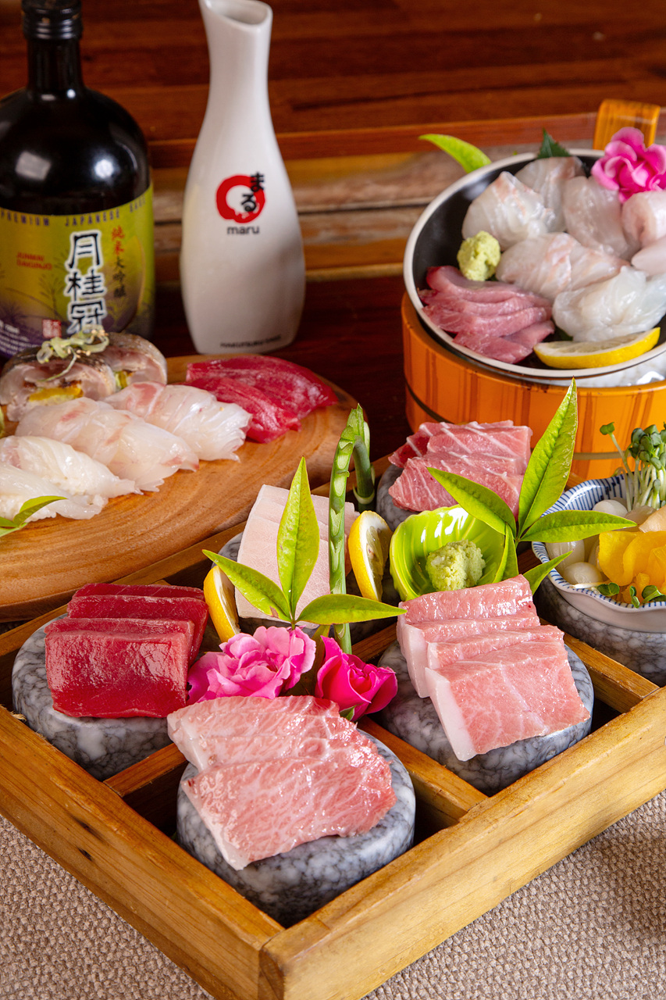
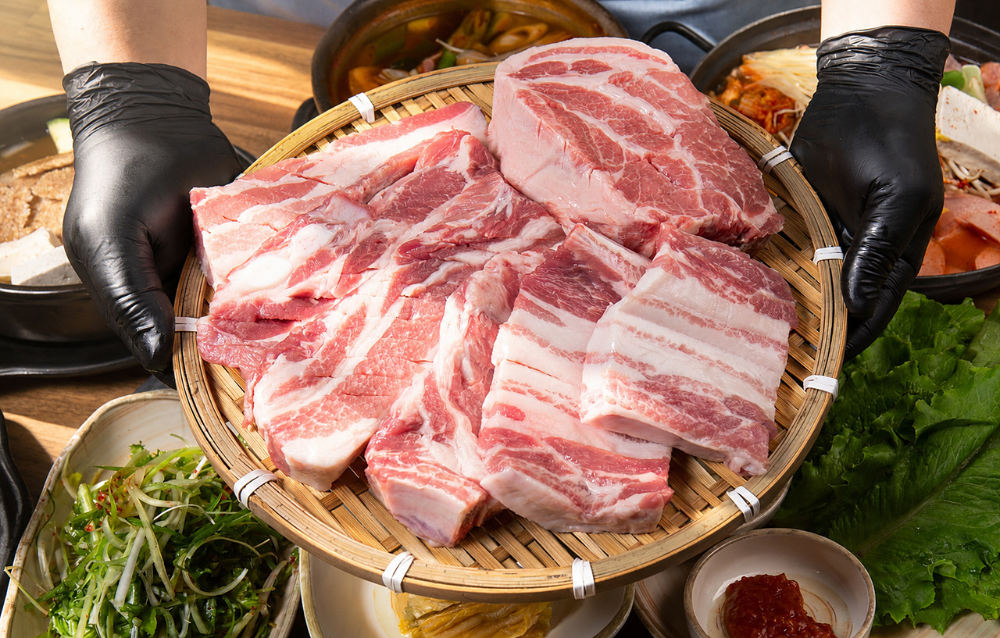
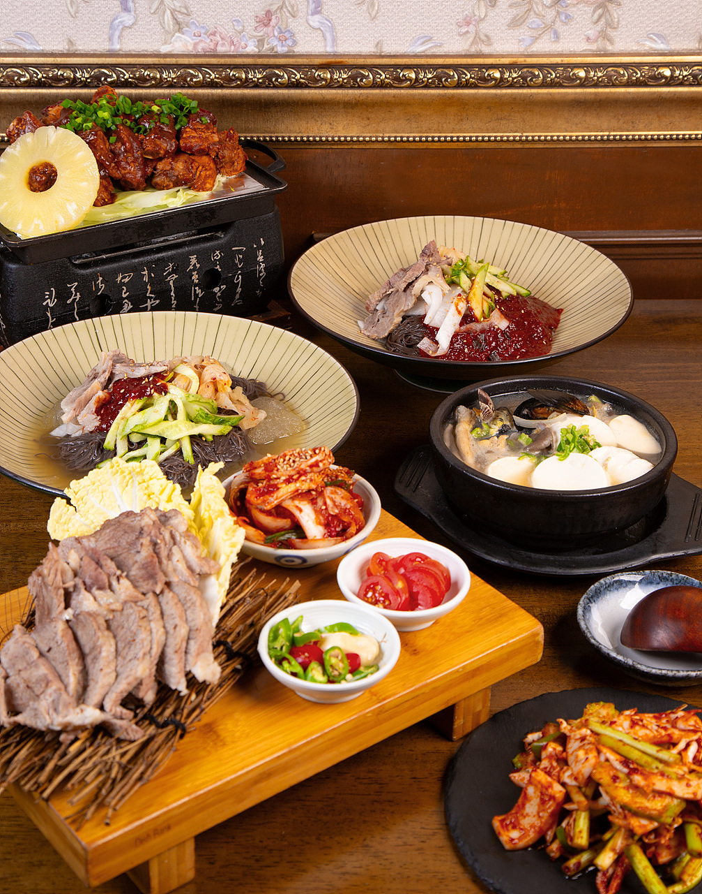
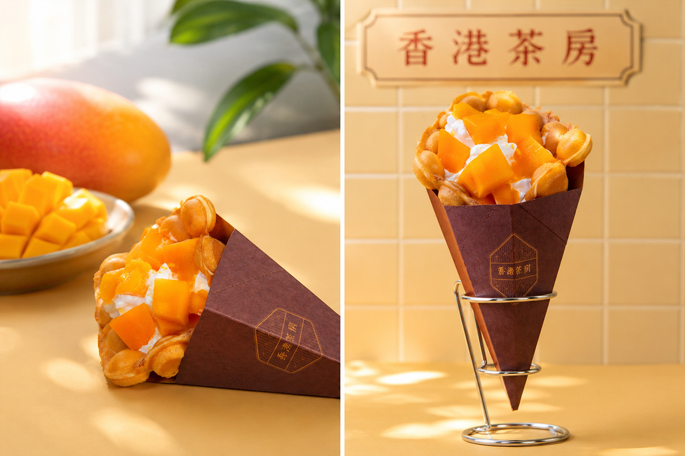

실제 음식 그대로
재료의 색과 질감을 살려 과장되지 않은 실사 이미지를 만듭니다.
COMMERCIAL FOOD PHOTOGRAPHY
고객이 클릭하고, 방문하고,
주문하게 만드는 상업 음식사진을 촬영합니다.
WHY OPEN RUN
과한 연출이나 AI 같은 보정이 아니라, 실제 음식의 질감과 신선함을 살려 고객이 주문하고 싶게 만드는 사진을 촬영합니다.
재료의 색과 질감을 살려 과장되지 않은 실사 이미지를 만듭니다.
네이버플레이스, 배달앱, 메뉴판, SNS에 맞는 구도와 비율로 촬영합니다.
현장 촬영, 셀렉, 전문 보정, 고해상도 납품까지 한 번에 진행합니다.
PORTFOLIO
가장 자신 있는 촬영 결과만 선별해 보여드립니다.




FULL PORTFOLIO
버튼을 누르면 회·해산물, 고기, 한식, 카페 사진만 골라 볼 수 있습니다. 사진을 클릭하면 큰 화면으로 확대됩니다.
BEHIND THE SCENES
유튜브 링크는 홈페이지 안에서 바로 재생됩니다. 인스타그램·네이버 영상은 버튼을 눌러 원본 페이지에서 볼 수 있습니다.
ONE SHOOT, MANY USES
PROCESS
촬영 메뉴와 사용처를 확인합니다.
견적과 촬영 일정을 확정합니다.
매장에 방문해 현장 촬영합니다.
셀렉 후 자연스럽게 보정합니다.
고해상도 파일을 전달합니다.
FAQ
네. 지역과 촬영 규모를 확인한 뒤 전국 출장 촬영이 가능합니다.
촬영 수량과 보정 범위에 따라 안내드리며, 상담 단계에서 정확한 납품 일정을 전달드립니다.
가능합니다. 메뉴 수와 필요한 연출 컷을 기준으로 촬영 시간과 견적을 안내드립니다.
네. 필요한 가로·세로 비율과 여백을 고려해 여러 매체에 활용할 수 있도록 촬영합니다.
음식의 형태와 질감을 과도하게 바꾸지 않고, 실제 음식이 가장 맛있어 보이도록 자연스럽게 보정합니다.